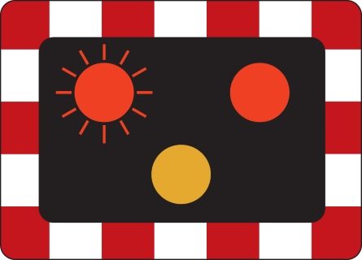
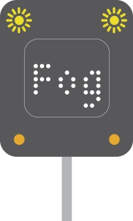
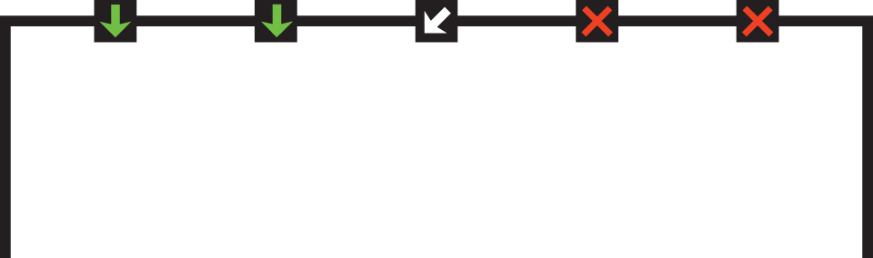

1. Light signals controlling traffic
控制交通的燈號
Light signals used to control traffic, including traffic light signals, flashing red lights, motorway signals and lane control signals.
⽤於控制交通的燈號，包括紅綠燈信號、閃爍紅燈、⾼速公路信號和⾞道控制信號。
I. TRAFFIC LIGHT SIGNALS 交通燈燈號

RED means 'Stop'. Wait behind the stop line on the carriageway
紅⾊表示“停⽌”。在⾞道上的停⾞線後⾯等候
RED AND AMBER also means 'Stop'. Do not pass through or start until GREEN shows
紅⾊和琥珀⾊也表示“停⽌”。在綠⾊顯⽰之前請勿通過或出發

GREEN means you may go on if the way is clear. Take special care if you intend to turn left or right and give way to pedestrians who are crossing
綠⾊表⽰如果道路暢通，您可以繼續前進。如果您打算左轉或右轉並給正在過⾺路的⾏⼈讓路，請特別⼩⼼

AMBER means 'Stop' at the stop line. You may go on only if the AMBER appears after you have crossed the stop line or are so close to it that to pull up might cause an accident
琥珀⾊的意思是「停在停⽌線」。只有當您越過停⽌線或距離停⽌線太近以⾄於停⾞可能會導致事故時出現琥珀⾊時，您才可以繼續前⾏
A GREEN ARROW may be provided in addition to the full green signal if movement in a certain direction is allowed before or after the full green phase. If the way is clear you may go but only in the direction shown by the arrow. You may do this whatever other lights may be showing. White light signals may be provided for trams
如果在全綠階段之前或之後允許在某個⽅向上移動，則除了全綠訊號之外還可以提供綠⾊箭頭。如果道路暢通，您可以⾛，但只能沿著箭頭所⽰的⽅向⾛。無論其他燈顯⽰什麼，您都可以執⾏此操作。有軌電⾞可能會提供⽩光信號
II. FLASHING RED LIGHTS 閃爍的紅燈

Alternately flashing red lights mean YOU MUST STOP
紅燈交替閃爍表⽰您必須停⾞
III. MOTORWAY SIGNALS 高速公路信號
(These signals are also used on other high-speed roads.)
(這些信號也⽤於其他⾼速道路。)
You MUST NOT proceed further in this lane
您不得在這條⾞道上繼續⾏駛
Change lane 變更⾞道

Reduced visibility ahead 前⽅能⾒度降低

Lane ahead closed 前⽅⾞道封閉
Temporary maximum speed advised and information message
臨時最⼤速度建議和資訊訊息
You **MUST NOT** enter or proceed in the left lane, temporary mandatory maximum speed limit and information message
您**不得**進入或在左⾞道上⾏駛、臨時強制最⾼速度限制和資訊訊息

Temporary maximum speed advised
建議臨時最⾼速度
End of restriction 限制結束
IV. LANE CONTROL SIGNALS 車道控制信號

Green arrow - lane available to traffic facing the sign
綠⾊箭頭 - ⾯向標誌的交通可使⽤的⾞道
Red crosses - lane closed to traffic facing the sign
紅⼗字 - ⾯向該標誌的⾞道禁⽌通⾏
White diagonal arrow - change lanes in direction shown
⽩⾊對⾓箭頭 - 依所⽰⽅向改變⾞道